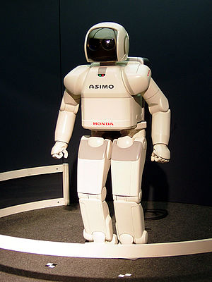

What's the problems of AI
The first researchers in the science of artificial intelligence developed
algorithms that simulate the sequential logical reasoning that humans do
when solving puzzles, playing backgammon or logical deductions. In the
1980s and 1990s, artificial intelligence research led to highly successful
ways of dealing with uncertain or incomplete information, using concepts
from probability and economics. For difficult problems, most of these
algorithms require huge computational resources—resulting in a
"combination explosion": the amount of memory or time needed for computers
becomes astronomical when the problem exceeds a certain size. The search
for algorithms that are more capable of solving problems is a top priority
for AI research.
Intelligent agents must be able to set and achieve goals. They need a way
of envisioning the future (it must have the ability to represent the
condition of human beings in this world, and to be able to predict how
much they will be able to change it), and to be able to choose to maximize
the usefulness (or "value") of available options. In some planning
problems, the intelligent worker can assume that he is the only thing
working in the world and can become certain of the consequences of his
actions. Nevertheless, if this is not true, the worker must periodically
check that his expectations are consistent with reality, and must change
his plan when necessary. This requires that the worker work under
uncertainty.
Machine Learning Machine learning has been central to AI research from the
start. Unsupervised learning is the ability to find patterns in a large
number of inputs. Supervised learning includes both classification (the
ability to determine to which category something belongs, after seeing a
number of patterns of several things from several categories), and
regression (the discovery of a continuous mechanism that would generate
outputs from inputs, given a set of numerical inputs and outputs).
examples). In evaluative learning, the worker is rewarded for a good
response and punished for a bad response. These responses can be analyzed
in terms of decision theory, using concepts such as utility. Mathematical
analysis of machine learning algorithms and their performance is a branch
of theoretical computer science known as computational learning theory.

Emotions and social skills play two roles for an intelligent agent: It
must be able to predict the actions of others, and understand their
motives and emotional states. (This involves elements of game theory,
decision theory, as well as the ability to simulate human emotions and
perceptual skills to detect emotions.) For good human-computer
interaction, an intelligent machine also needs to display emotions—at
least it must appear polite and sensitive in its interactions with humans.
At best, she should have normal feelings.
In the 1940s and 1950s, a number of researchers explored the relationship
between neuroscience, information theory, and cybernetics. Some of them
built machines that use electronic networks to display primitive
intelligence such as turtles and. W. Gray Walter and the Johns Hopkins
Monster. Many of these scholars gathered for meetings of the Teleological
Society at Princeton University and the Relativity Club in England. By
1960, the curriculum was largely obsolete, although some elements of it
came to life again in the 1980s.
.jpg)
Artificial intelligence research into myth, narrative and speculation
Thinking machines and artificial beings appear in Greek myth, such as
Talos in Crete , golden robots in Hephaestus and Galatea in Pygmalion.
thought that quasi - human intelligent originated in many ancient
societies, and the oldest sacred statues worshiped in Egypt and Greece ,
including machines Yan Shi in Yan Shi , , champion Alexandria and the
island or Wolfgang von Kempelen. was believed that Jabir ibn Hayyan made
artificial beings. The stories of these creatures and their fate discuss
the many hopes, fears, and ethical considerations made by artificial
intelligence. In her novel Frankenstein , Mary Shelley addresses a
fundamental question in the ethics of artificial intelligence: If a
machine can be created that has intelligence , can it sense? If he can
feel, does he have the same human rights ? This idea also appears in
modern science fiction : in the movie "Artificial Intelligence": the film
represents the machine in the form of a young child endowed with the
ability to feel human emotions, including the ability to feel suffering.
This issue, which is now known as "robot rights", is currently being
considered in some institutions; For example, the California Foundation
for the Future, although many criticsThey think it is too early to discuss
this. Another issue that both science fiction writers and futurists are
exploring is the impact of artificial intelligence on society. In the
novels , AI appears as a servant ( R2D2 in Star Wars ), a law enforcer
(KITT "Knight Rider"), a companion (Lt. Commander Data in Star Trek), an
invader (The Matrix), and a dictator (with folded hands). Hands), the
Terminator (The Terminator, Battlestar Galactica), an extension of human
abilities in Ghost in the Shell, and the Savior of the Human Race R.
Daneel Olivaw in the Foundation Series. Some academic sources have
considered these results as a call to reduce the demand for human labor,
enhance human capacity or expertise A need to redefine human identity and
core values. Some futurists claim that AI will push the boundaries of
progress and fundamentally change humanity . Ray Kurzweil used Moore's Law
(which describes the dramatic improvement in digital technology with
superhuman accuracy) to calculate that a computer will have the same
processing power as human brains by 2029 , and by 2045 AI will reach a
point where it will be able to improve itself at a rate Beyond everything
imaginable in the past, a science-fiction scenario penned by writer Vernor
Vinge called the ' Technological Singularity '. Edward Fredkin says that
“artificial intelligence is the next stage in evolution” an idea first
proposed by Samuel Butler / “Darwin among the Machines” (1863), and
elaborated on by George Dyson in his book of the same name in 1998.
Anticipating Many futurists and science fiction writers argue that humans
and machines will merge in the future and become a cyborg (i.e. a system
that mixes natural and artificial traits so that it is more capable and
powerful than both). This idea is called " transhumanism " and has its
roots in the writings of Aldous Huxley and Robert Ettinger. Ettinger, now
associated with the name of the robot designerHans Moravec, roboticist
Kevin Warwick, and inventor Ray Kurzweil. The representation of the "above
humanity" Transhumanism in the novels as well, for example in the story of
the manga Japanese "Ghost in the oyster" and a series of science fiction
called "Dune series." Pamela McCorduck writes that these scenarios are an
expression of the ancient human desire to, as she called it, "make gods
Artificial intelligence assessment
How to determine whether the worker is intelligent or not? In 1950, Alan
Turing proposed a general procedure for testing the intelligence of a
worker now known as the Turing test. This procedure allows examining most
of the major problems of artificial intelligence. But it is a very
difficult challenge at the present time, and all the factors that came
before it failed. The AI can also be evaluated according to specific
problems such as small problems in chemistry, handwriting recognition and
games. These tests are called the expert Turing tests. The smaller the
problems, the greater the number of achievable goals, and the greater the
number of positive outcomes. Artificial intelligence test results are
classified into the following groups: Optimization : it could perform
better. Strong Superhuman : Performing better than all humans. Superhuman
: He performs better than most humans. Less than human : worse than most
humans perform. For example, the performance of checkers (checkers) is
optimal, performance in chess falls under "superhuman" and is close to
"strong superhuman" and performance in many everyday tasks performed by
humans falls under the category "" less than human.
 Document
Document